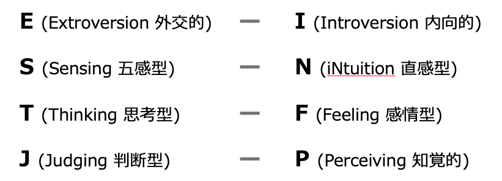

4文字タイプとは何か？
4文字タイプ論は、人それぞれの考え方や価値観を16通りのタイプに分類し、4文字のコードを探し当てることでその人をより理解するための試みです。以下の4つのカテゴリーにつき、それぞれ2種類ずつのタイプ分類があります。
例えば外向的(E)で、直感(N)を大切にし、感情優位(F)で、判断的な性格(J)なら、「ENFJ」の4文字がその人のタイプになります。この4文字の組み合わせが、千差万別な人物像を読み解くためのコードです。4文字がわかれば、その人がどんな考え方や価値観をもっているか効率的に知ることができるようになります。
タイプ違いによるトラブルの例
少し実例を取り上げてみます。
＜幼稚園のお遊戯会で、衣装を作るための保護者の集まりで起きた出来事＞
人魚姫役の衣装をどうするかAさんBさんCさんで考えていました。
A「人魚姫なら、ヒトデを髪につけたらかわいいんじゃない？」
B「それ、どうやって作るの？」
A「・・・」
～次の日～
C「今回はこんなやり方で作ることに決定しました」
A「ここはもっとこうしない？あとここはこっちのほうがよくない？」
B「決まったんだし、間に合わなくなっちゃうからもう作ろうよ」
この集まりで、AさんはBさんに苦手意識を持ってしまいました。「攻撃された」と思ったのです。でもBさんにはその自覚はありません。実はAさんはNの直感型、アイディアがどんどん出てくるタイプですが、それを実現する方法までは考えていません。対してBさんはSの五感型、決まった形から考えるタイプで、アイディアはあまり出てきませんが、実現可能性や方法論に重要性を感じています。この例のように、タイプが違うとぶつかってしまうことがあります。しかしタイプについての理解があれば、タイプの違いはむしろチャンスにもなります。
4文字タイプを知るメリット
NタイプとSタイプのように対となるタイプ同士はぶつかりやすく、Sタイプからすれば、Nタイプはマイペースで変わった人。Nタイプからすると、Sタイプは面白みのない人という評価になりがちです。しかし、お互いにその特性を知った上で尊重し合えばむしろ最高のコンビになりえます。Nタイプがアイディアをどんどん出して、Sタイプがそれを形にしていくことで、お互いに補完し合えるのです。
タイプの特性を知ったうえで役割分担をすれば、いろんな物事が驚くほどうまくいく可能性を秘めているのです。
4文字タイプセッションの内容・雰囲気
タイプLABでは自分や他者を理解する最初の入り口として、4文字タイプ論を理解するための体験講習会「4文字タイプセッション」を定期的に開催しています。セッションの流れをご紹介します。
- 各カテゴリーにおけるタイプの説明
- 参加者にタイプを当ててもらう
- アクティビティ(ワーク)
- ワークを通して参加者のタイプをもう一度確認する
グループセッションで本当の自分を見つける

インターネット上でタイプの自己診断をして、自分はこれだ！と思って参加する方もいらっしゃるのですが、自己申告だけのWEB診断の場合、実は「こうあるべき」と思い込んでいたり、「こうありたい」という理想像でタイプを装っていたりすることがあり、本来とは違う結果が出ることも少なくありません。
例えば、本当の自分は枠に縛られない自由が好きなP（知覚的）タイプだけど、社会人や親としてきちんとしなきゃ！という義務感からJ（判断的）タイプとして振舞っている場合など。また、タイプは必ずしも100％対０％ではありません。40%対60%だったりすることもよくあります。
グループセッションやワークを通して、ほかのタイプの方と比べてみるとわかることがたくさんあります。同じ出来事に対するタイプごとの受け止め方が全く違っていて、大爆笑したり、あの時の出来事はこういうことだったのか！と雲が晴れたような気持ちになったり、日常生活で武装した仮面を脱ぎ捨て、素顔の自分を見つけて自然と涙が出たり…。
毎回たくさんの発見がありますよ。
タイプを知って人生が輝く
自分の「ふつう(無意識)」は相手と違います。
タイプの違いを知ればお互いを尊重し合うことができ、世界がたちまち輝き出します。
自分を知る場、違いを知る場、タイプLAB。
少しでも興味を持った方、セッションにてお待ちしています！
ご予約はこちらから。